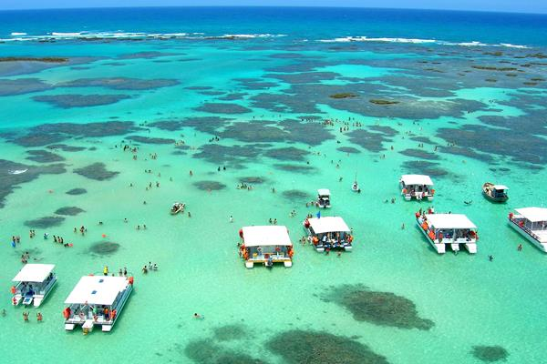
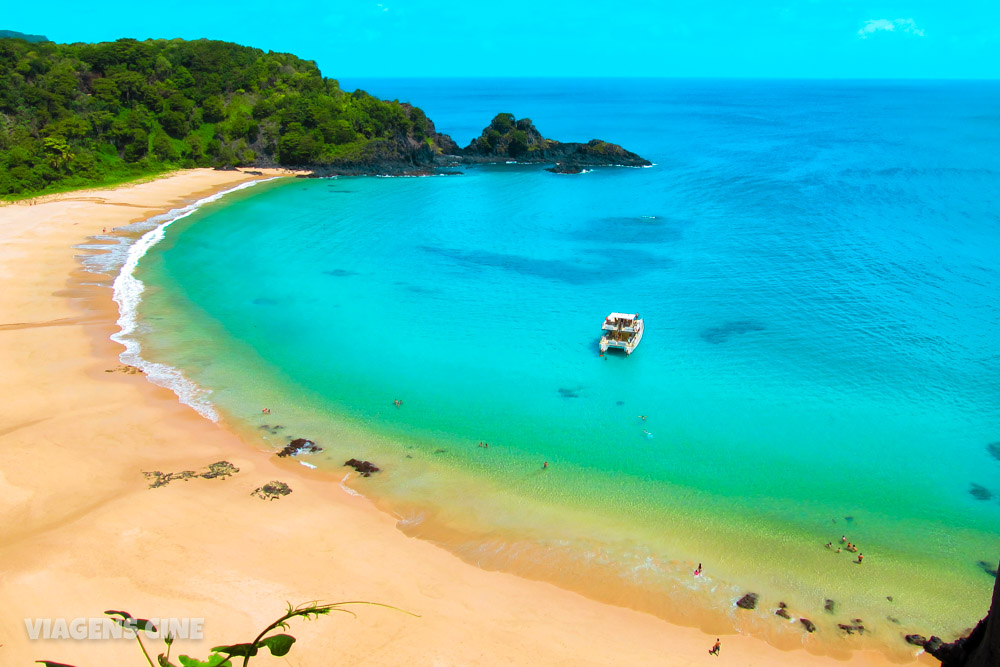

Porto de Galinhas
Porto de Galinhas é uma praia localizada no distrito homônimo,
pertencente ao município de Ipojuca, no estado de Pernambuco, Brasil. A
região possui piscinas de águas claras e mornas formadas entre corais,
além de estuários, mangues, areia branca e coqueirais.

Maragogi
Praia de Maragogi é uma visita obrigatória para quem quer conhecer
destinos praianos paradisíacos. Com um mar de cor extraordinária,
piscinas naturais e recifes de corais bem pertinho da superfície, essa
tem tudo para ser uma experiência inesquecível.

Praia do Sancho
Baía do Sancho é uma baía de águas claras localizada a oeste do Morro
Dois Irmãos e a leste da Baía dos Golfinhos, no arquipélago de Fernando
de Noronha, no estado de Pernambuco, Brasil. O local abriga uma praia de
mesmo nome.